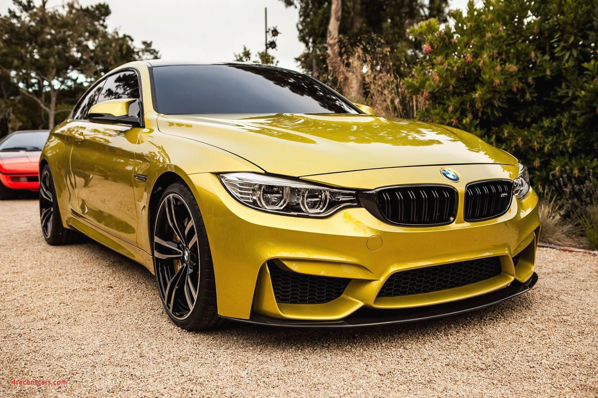
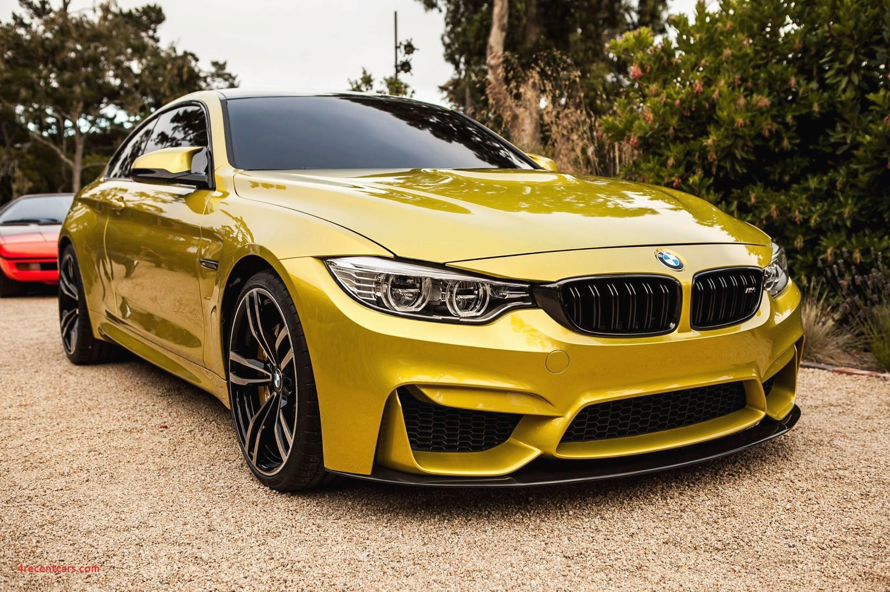

The circular blue and white BMW logo or roundel evolved from the circular Rapp Motorenwerke company logo, which featured a black ring bearing the company name surrounding the company logo, on a plinth a horse's head couped.
BMW retained Rapp's black ring inscribed with the company name, but adopted as the central element a circular escutcheon bearing a quasi-heraldic reference to the coat of arms (and flag) of the Free State of Bavaria (as the state of their origin was named after 1918), being the arms of the House of Wittelsbach, Dukes and Kings of Bavaria.However, as the local law regarding trademarks forbade the use of state coats of arms or other symbols of sovereignty on commercial logos, the design was sufficiently differentiated to comply, but retained the tinctures azure (blue) and argent (white).
The current iteration of the logo was introduced in 2020, removing 3D effects that had been used in previous renderings of the logo while removing the black outline encircling the rondel. The logo is used for BMW's branding but it is not used on vehicles.
BMW is an abbreviation for Bayerische Motoren Werke (German pronunciation: [ˈbaɪ̯ʁɪʃə mɔˈtʰɔʁn̩ ˈvɛɐ̯kə]). This name is grammatically incorrect (in German, compound words must not contain spaces), which is why the name's grammatically correct form Bayerische Motorenwerke (German pronunciation: [ˈbaɪ̯ʁɪʃə mɔˈtʰɔʁn̩vɛɐ̯kə] (listen)) has been used in several publications and advertisements in the past.[16][17] Bayerische Motorenwerke translates into English as Bavarian Motor Works.[18] The suffix AG, short for Aktiengesellschaft, signifies an incorporated entity which is owned by shareholders, thus akin to "Inc." (US) or PLC, "Public Limited Company" (UK).
The terms Beemer, Bimmer and Bee-em are sometimes used as slang for BMW in the English languageand are sometimes used interchangeably for cars and motorcycles.
Eadie had won contracts to supply precision parts for firearms to the government's long-established Royal Small Arms Factory at Enfield, Middlesex, with its offshoot in Sparkbrook and had assumed the brand name Royal Enfield.[10] In 1896 they also incorporated a new subsidiary company, The New Enfield Cycle Company Limited,[note 1] to handle much of the cycle work and in 1897 Enfield making complete cycles as well parts for other assemblers took all the cycle assembly work from Eadie.

 
